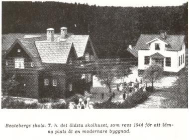
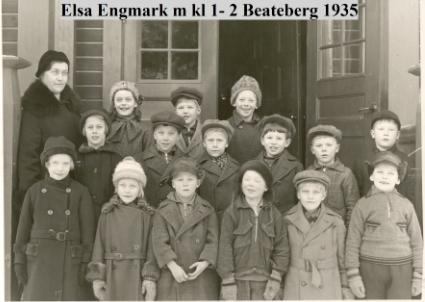
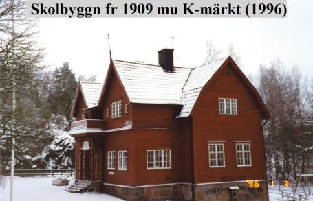
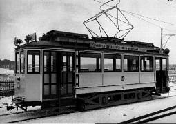
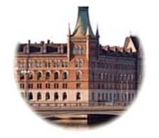
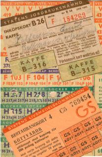

Södermalm i tid och rum. Stockholm
Mina skolår 1934-44 - Insänt av Stig E. Petterson.
|
 |
Skolan byggdes 1909 och står fortfarande kvar och är K-märkt. Skolans avsides läge motiverades säkert av att den skulle ligga geografiskt rättvist och centralt i denna den östra delen av Huddinge kommun. Lika långt för oss från Trångsund, Fållan och Stortorp som för barnen i Länna. Längst hade de barn som kom från statarstugorna i Ågesta men de hade faktiskt skolskjuts. De åka ordinarie buss från Stora Mellansjö till Forsen och där bytte de till Handen-bussen som släppte av dem vid skolan. Förutom barnen från Ågesta bodde det barn i Stora Mellansjö som också hörde till Huddinge. Men under min tid gick ingen av dem i Beateberg. För dem hade föräldrarna ordnat plats i skolan i Södertörns Villastad, som hörde till Stockholm. |
Vi barn från Trångsund med omnejd var nästan alla arbetarbarn, ganska "jämnfattiga" skulle jag vilja påstå. Enkelt klädda var vi, men de flesta av oss var nog "hela och rena". Många av barnen från Länna var statarbarn men i varierande omständigheter och kunskapsgrad. Några dök upp för ett år eller två. En del bytte förmodligen skola ofta och hade svårt att hänga med.
Skolan hade på nedre botten av en liten farstu och därinnanför kapp- och omklädningsrummet. Där vistades vi på rasterna vid dåligt väder. Där skulle vi på morgonen sutta tyst och vänta på att första lektionen skulle börja. Omklädningsrummet var också vår "lunchmatsal". Där, bland våta ytterkläder och fotsvettdoftande pjäxor och stövlar, åt vi våra medhavda smörgåsar och drack vår mjölk ur flaska. På samma plan fanns också de två lektionssalarna. Den mindre för småskolan - klass 1 och 2 som gick tillsammans. Småskolefröken hette Elsa Engmark och bodde i ett stort hus med stor trädgård som tillsammans med ytterligare ett par tomter hettes Hammartorp. Det låg där Trångsunds centrum nu ligger. Fröken Engmark var fru och hade tre döttrar och en son och en man. Mannen var något slags kamrer, tror jag,, på Stora Sköndal.
I den större lokalen, som också var gymnastiksal gick klass 3-6 och där härskade magister Alrik Sandberg. Han bodde på övervåningen med sin syster, som var hans hushållerska. Skolsalen var mycket ljus, ena långsidan upptogs av stora fönster som vette ut mot Beatebergs gårds ägor. Den sidan av lokalen var mycket kall på vintern, medan den andra sidan utan fönster var mycket varm; där stod nämligen kaminen som höll hälften av oss varma och hindrade den andra hälften från att frysa ihjäl. De med "förfrysningsskador" blev rikt kompenserade under vår och tidig höst då solen gassade genom de stora fönstren. Det var nämligen så på den tiden att det var vinter med mycket snö och lagom kallt från november till mars. Därefter var det sol och värme - och lite lagom med regn - under tiden april-oktober. Så bra blir det aldrig mer!
Magister Sandberg var en lärare av gamla stammen; han slogs med pekpinnen och en gång boxade han Lasse Pettersson från Fållan i magen så att han svimmade.
"Han e vist lite trött", sa Sandberg.
Vi gick i skola även på lördagar, liksom de vuxna arbetade till omkring klockan 13. Till lördagen skulle vi kunna ämnet för söndagens högmässotext. Vi skulle alltså veta vilket evangelium, vilket kapitel och vilken vers prästerna hade som utgångspunkt för sin predikan. Och visste vi inte det tog det hus i helsike. Läxan till måndagen var alltid en psalm, hela psalmen, antingen den hade fyra eller tio verser. Detta var ett gissel som alltid plågade oss över veckosluten.
Magister Sandberg gick i pension under min tid i Beateberg. Kanske kan man ha en viss förståelse för att han var less på ungar och undervisning efter alla år som lärare, men han hade klart osympatiska drag. Några barn av "lite bättre" familj behandlades med visst överseende. De av oss arbetarungar som kunde läxorna, rätta bibelställen och psalmverserna på måndagsmorgnarna behandlades förhållandevis välvilligt. Statarbarnen, i synnerhet de som hade svårt för sig av olika skäl, behandlades sämre. En regnblöt höstmorgonen kunde han vräka ur sig att "här kommer ni inklafsande med halva Lännas åkrar under fötterna".
Jag kan inte minnas att man någon gång märkte att det lades ned extra ansträngningar på de som hade svårt för sig. De fick vara som de var och fick betyg därefter.
|
 |
En av grabbarna från Länna var Rune Jansson och var en av mina bästisar. Han var enda barnet och bodde i första huset när man tog av från Dalarövägen mot gårdarna i Länna. Han och föräldrarna bodde ensamma i stugan. Jag har för mig att Rune kom till flottan och hamnade i ubåtsvapnet. Två andra barn från Länna var Ivar (Ivve) Jonsson och Astrid. Ivve blev dragspelare och turnerade med orkester. Han gifte sig med Astrid och jag träffade dem för ett 20-tal år sedan då de bodde på Södermalm.
Städerskan i skolan bodde i ett litet torp som hette Storvreten. Det låg ungefär vid nuvarande Skogås Centrum. När vi flyttade till Skogås 1962 fanns fortfarande torpets jordkällare kvar. |
Sista sommarlovet före realskolan var det meningen att jag skulle arbeta och bidraga till min försörjning. Jag hade sökt och fått jobb hos Lord, en trädgårdsmästare i Skogsäng. På den tiden fanns många handelsträdgårdar i trakten.
Klockan sju på morgonen började jag min första arbetsdag. 10 kronor i veckan skulle jag få. Vi åt lunch - fast så hette det inte då - i boningshuset. Jag planterade ut asterplantor hela dagen. Halv fem kom Lord och sade att nu skulle vi äta middag. Trött var jag, minst sagt. Jag tänkte, fint att få mat innan man går hem. Men inte. Efter middagen arbetade vi vidare till klockan sju.
När jag cyklade hem den kvällen var jag en knäckt yngling. Pappa ringde till trädgårdsmästaren och sade ifrån att så tänkte han inte låta sin son arbeta. Jag skulle sluta på stört.
- Ja, sa Lord, han e´ ju alldeles oerfaren också.
Pappa, som några år i sin ungdom arbetat i t trädgården på Långbro sjukhus, frågade Lord om han trott han skulle få en erfaren trädgårdsmästardräng som arbetade 7-19 för 10 kr i veckan.
Resten av sommaren arbetade jag extra med att köra ut varor med cykel åt Larssons affär. Där fick jag i alla fall 12 kr. pr vecka - och mänskligare arbetstid. Men krångligt var det ibland. Jag skulle inte bara inkassera pengar för de levererade varorna. Jag skulle också klippa och ta hand om rätt antal och sort av ransoneringskuponger för de olika varorna. Mamma arbetade också extra i affären på den tiden..
Vid mitt sista år i Beateberg hade Sandberg gått i pension och övervåningen i skolhuset gjorts om till två skolsalar. varav den ena för fysik och kemi. De fyra klasserna hade delats i två grupper. Göte Israelsson var lärare för de yngre och Karin Jansson för oss i femman-sexan. Israelsson var också pojkarnas lärare i träslöjd, något som flickor inte fick delta i. Slöjdsalen låg i den ännu äldre skola som då fanns kvar på skoltomten. De revs senare när den större stenskolan byggdes.
Våra toaletter, torrdass förstås, låg långt bort på luktfritt avstånd på skoltomten. Blev man nödig under lektionen räckte man upp handen och bad att få "gå ditbort".
Efter sexan fortsatte alla mina kamrater i den s.k. fortsättningsskolan, d.v.s. klass 7. Den hölls i Centralskolan i Huddinge och dit åkte de tåg med byte i Älvsjö. Vi kände till Centralskolan sedan tidigare. Dit hade vi åkt buss några gånger varje år till den manhaftiga, hårdhänta och grymma kvinnliga tandläkaren. Jag minns än i dag den obehagliga känslan i maggropen när först det stora bussgaraget och så, till höger om vägen, Centralskolans gula komplex blev synliga från bussen. För att göra vårt besök i Huddinge något mer lustfyllt och för att garantera fortsatt verksamhet åt skoltandläkaren låg utanför skolgårdens bortre hörn mot bussgaraget en gottkiosk.
Sista vårterminen skulle vi göra en skolresa till Trondheim. Vi såg fram emot att för första gången i våra unga liv få resa utomlands. Men den 9 april 1940 ockuperade tyskarna Norge och vår resa ställdes om till Dalarna. Vi bodde på pensionat Soltägtgården i Tällberg. Vi gjorde en tur med ångbåten Gustaf Vasa till Mora bl.a.
Min bästa och mesta kompis under skoltiden i Beateberg och under loven var Herbert Inge Jönsson. Hans fader tog namnet Forsbo, ty de bodde vid Forsen i en liten stuga mellan Nynäsbanan och den då nya Nynäsvägen alldeles innanför kommungränsen. Bert Forsbo och jag hängde ihop periodvis under somrarna även sedan jag börjat skola i staden och Bert efter 7:an börjat arbeta. Hösten 1940, när mina forna klasskamrater fortfarande höll ihop på tågresorna till och från Huddinge kastades jag ensam ut i det stora ovissa - en annan skola. Det var Södra Kommunala Mellanskolan på Hornsgatan 93. Att den var kommunal innebar att den var kostnadsfri, undervisningen vill säga. Böcker och resor och givetvis skollunch fick föräldrarna betala. De andra läroverken, Katarina Real och Södra Latin,. kostade pengar och ansågs givetvis finare.
Strax före sju på morgonen gick jag hemifrån. Mellan 7.10-7.15 kom bussen från Handen, strax före halv åtta var jag vid Åhlén & Holm vid Ringvägen-Götgatan. Därifrån var nära en halvtimmes promenad längs Ringvägen till skolan. Sen gällde det att snabbt hänga av sig för att hinna in till morgonbönen som hölls i aulan och var obligatorisk för alla av Luthersk trosbekännelse, vilket jag tydligen ansågs vara.
Spårvagn nr 4, ringlinjen, gick i stort samma väg som jag till skolan men det var ej tal om att åka. Det kostade 10 öre och min veckopeng var 2:-. Av dessa skulle jag köpa mjölk för 10 öre om dagen i mjölkaffären på Krukmakargatan och resten skulle räcka till småsaker som pennor, radergummi etc. Var jag sparsam och hade tur fanns kanske pengar över i slutet av veckan till en stor chokladkaka för 25 öre eller en tur med spårvagnen. Mjölken vågade jag aldrig dra in på. Det var tufft nog ändå för en 13-åring att gå hemifrån sju på morgonen, äta ett par smörgåsar och dricka mjölk kl 11 och sedan inte få något i sig förrän efter klockan fem på eftermiddagen. Då hade man förutom själva skoldagen, kanske med gymnastik, gått ungefär 7 kilometer. Vi gick i skolan även på lördagar men slutade då vid ett-tiden.
Det är knappast att undra på att det då och då hände att jag på eftermiddagen hade huvudvärk. Ibland när jag kom hem var jag så slut att jag inte orkade äta. Jag hade en fruktansvärd huvudvärk, kräktes utan att ha något att få upp och gick till sängs. Nästa morgon hade jag vilat upp mig och gick till skolan som vanligt..
| När jag emellanåt blev alltför less på skolan skolkade jag de sista timmarna och satsade 10 öre på att åka 4:an stan runt; Hornsgatan ned till Hornstull, Långholmsgatan, över Västerbron, Fridhemsplan, S:t Eriksgatan, Odengatan i hela dess längd, Valhallavägen förbi Stadion, hela Sibyllegatan ned till Nybroplan, Norrmalmstorg, längs Kungsträdgårdsgatan, Strömgatan till Gustav Adolfs torg, över Norrbro, svängen förbi Slottet, Skeppsbron med Finlandsbåtarna (och båtar som trafikerade Gotland och Norrlandskusten), Slussen och Katarinavägen med utsikten över Strömmen, Renstiernasgatan och Ringvägen fram till Götgatan där jag tog bussen hem. Denna tur gjorde jag minst ett par gånger per termin och den innebar avkoppling och var en liten |
 |
Skulle man byta från en spårvagn till en annan köpte man "övergång" vilket kostade 15 öre. Men jag vill minnas att priset ganska snart höjdes till 15 resp 20 öre.
I början av 40-talet fanns fortfarande många bryggerier kvar i Stockholm. Några kanske nedlagda men fastigheterna fanns kvar. Mitt emot Åhlén, där Ringen nu ligger låg Pihls bryggeri. På söder låg också München- och Nürnbergbryggerierna. Varje morgon på min väg till skolan längs Ringvägen mötte jag bryggarhästarna; två stadiga kampar framför en stor flakvagn lastad med huvudsakligen öl. På kuskbocken satt kusken, en stadig bit, väl påpälsad på vintern, oftast rödbrusig och ofta halsande en bira. På sig hade han ett stort förskinn, ett läderförkläde. Ölflaskorna (burkar fanns inte) stod i stora backar av trä, "soffor", som innehöll 50 flaskor. Ölen levererades till affärer och kanske framförallt till de många ölkaféer som då fanns. Ett känt sådan var Ringen i hörnet Ringvägen-Götgatan. Ölkaféerna var den tidens pubar och de serverade också billig och rejäl husmanskost.
På min väg till skolan passerade jag ett ölkafé, som öppnade klockan sju på morgonen, och Blomsterfondens bageri som spred en ljuvlig doft av nygräddat. Jag passerade också Eriksdal, Rosenlunds ålderdomshem, Södersjukhuset under byggnad, Tantolunden, Tobaksmonopolet och Zinkensdamms idrottsplats. Efter skolans slut hade jag god tid till bussen; den gick inte så ofta. Då gick jag olika vägar och lärde mig känna den del av Södermalm som ligger mellan Hornsgatan, Götgatan och Ringvägen. På frukostrasten inmutade jag resterande del av Söder fram till Riddarfjäden. Senare kom jag också att arbeta vid Hornsplan ett par år och på äldre dar bodde jag ett år vid Tjärhovsgatan.
|
Eftersom Sverige var ett avspärrat land under kriget 1939-45 var det stor brist på bränsle till stadens uppvärmning. Även hus och inrättningar som normalt hade varmvatten fick detta endast korta perioder. Ved var det bränsle som stod till buds och vedtravar var en dominerande syn i
Stockholm. Trafiken var ringa och Ringvägen var och är en bred esplanad och gav plats för tiotusentals kubik ved i travar som sträckte sig hundratals meter.
De sista två åren i skolan fick jag pengar till lunchkuponger på den Norma-restaurang som låg i hörnet Ringvägen-Hornsgatan. Där ligger fortfarande en restaurang. Maten var kristidsmat; fiskpudding, fiskkorv, ragu av okänt ursprung m.m. Verkade maten alltför suspekt kunde man alltid välja gröt och mjölk med äppelmos. Hade man någon 10-öring över i slutet av veckan kunde man i godisaffären på Hornsgatan satsa på en stor påse kross från rånfabriken. |
 |
|
 |
Sommarlovet mellan andra och tredje klass och sommarlovet därefter arbetade jag som cykelbud på Kungl. Boktryckeriet P.A. Norstedt & Söner på Riddarholmen. Jag tyckte mycket om det arbetet. Jag fick lära mig känna staden grundligt. Det var lätt att ta sig fram med cykel på den tiden. Biltrafiken var minimal och den största olycksrisken var nog spårvagnsspåren som löpte kors och tvärs i stan. Det var lätt gjort att köra ned i spåret med framhjulet.
Jag älskade tiden inne i det stora huset på Riddarholmen. Här dundrade de stora tryckpressarna som tryckte böcker, tidningar och andra publikationer. Här trycktes Svensk Författningssamling och allt annat tryck åt Riksdagen, här fanns redaktionen för Sveriges äldsta tidning Post- och Inrikes Tidningar (som jag arbetade på 14 dagar). Här fanns också ett strängt bevakat tryckeri för Försvarsmakten och likaså ett tryckeri för ransoneringskort. Här fanns stora maskinsätterier där de slamrande maskinerna göt typerna i bly vartefter bokstäverna knackades ned av maskinsättaren. Här fanns de stora handsätterierna där flinka fingrar plockade rätt typer ur "kasten" och fogade till ord och rader som samlades i "skepp" till stycken och spalter. Jag trivdes med slamret i sätteriet, dånet från pressarna och doften av trycksvärta från de färska arken. |
Jag tyckte om att hämta manus eller korrektur i Riksdagshuset, på Livsmedelskommisionens olika kontor och på annonsbyråer för att snabbt ila med dem till rätt person på Norstedts. Det var alltid bråttom, men jag upplevde alltid folk som vänliga mot en yngling. Det var brådska men ingen stress, i varje fall inte som jag upplevde det. Jag älskade också själva huset och hela Riddarholmen som miljö. Närmaste granne var Riksarkivet som på senare år härbärgerat Genealogiska Föreningen. På den anrika ön ligger också Svea Hovrätt, Kommerskollegium och först och främst Riddarholmskyrkan.
Dessa två somrar höll jag mig i trim; förutom att jag var cykelbud under dagarna cyklade jag till och från stan. Dessutom cyklade jag med familjen till Närke på vår semester en av somrarna. Förtjänsten var heller inte att förakta. Jag vill minnas att jag fick någonting mellan 15 och 20 kr. i veckan; lite mer andra året. Naturligtvis fick jag lämna en del till familjekassan.
Man kan nog säga att min skoltid slutade lite snöpligt. Jag tror också att mina föräldrar sörjde över att jag aldrig tog någon examen. Det hade ju med stora försakelser bekostat min tid i läroverket.
Fjärde och sista året var jag definitivt skoltrött. Dessutom var det trist att aldrig ha pengar, att inte kunna köpa någonting, att inte kunna bjuda en tjej på kondis eller bio. Somrarna gick an, då fanns naturen, sjön, kanoten, cykeln. Då kunde man umgås ute. Men regniga hösten, kalla vintern!
Hösten 1943 började jag arbeta som extra busskonduktör på de bussar jag kände så väl och där jag redan var bekant med många chaufförer och konduktörer efter mina tre bussreseår. Jag arbetade lördagar, söndagar och helger. Nyårsafton 1943 arbetade jag och jag minns att vid tolvslaget befann jag mig i bussen på väg söderut mellan Ekberga och Stortorpsvägen (ungefär där Hortus nu ligger). De perioder jag arbetade hela veckor låg inkomsten på omkring 35:-. Det var ju skiftarbete och natt och helger.
Det här togs naturligtvis på krafterna och i februari (min sista termin före realexamen) blev jag sjuk och röntgen visade vad man då kallade en "körtel" på lungan. Jag blev inlagd två veckor på Ersta sjukhus på Fjällgatan. Där låg vi i ett 20-tal personer på salen; nio eller tio efter väggarna och fyra stycken mitt i salen.
Den här sjukperioden stäckte förstås planerna på examen till våren. Vi bestämde att jag istället skulle gå följande hösttermin och ta examen till jul. Fortsatte alltså våren och sommaren på bussarna. I slutet av augusti skulle jag så börja skolan på nytt. Men tji fick jag. Några veckor före blev jag sjuk med hög feber; lungsäcksinflammation och lång sjukskrivning - och ajöss med skolan.
I november 1944 sökte jag arbete på nytt och nu som cykelbud på AB Robo på Birger Jarlsgatan. Jag läste sedan Handelslära på korrespondens hos Hermods. Den innefattade handelskorrespondens, stenografi, handelsrätt, bankaffärer, import- och export etc. etc.
I realskolan hade jag läst tyska sedan första klass och engelska sedan andra. Dessutom valde jag franska tredje och fjärde året, men det var inte många lektionstimmar i veckan. Jag minns första meningen i läseboken: La France et une parti de l´Europe. Och så lärde jag mig för säkerhets skull "Je t´aime".
Senare kompletterade jag min engelska med ett "studentbetyg" på Borgarskolan.
Resten av min tid har jag tillbringat i livets hårda skola.